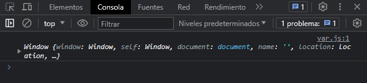
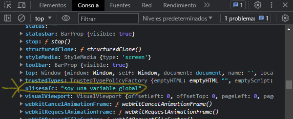
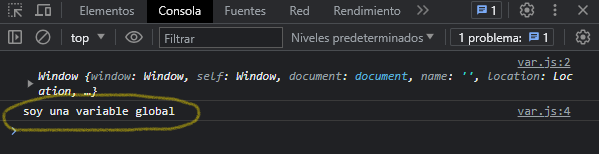
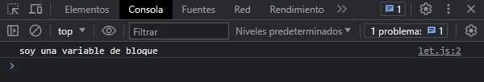

Antes de explicar como funciona var y let, debemos entender que es ambito de una variable, pues simplemente es la zona en donde definimos las variables que utilizaremos en nuestro programa, pueden ser variables globales y de bloque o conocida tambien como variable local. Una variable de bloque o variable local es aquella que se encuentra dentro de un bloque de codigo, osea, una funcion, una estructura repetitiva, una estructura condicional. En cambio, una variable global se encuentra fuera de cualquier bloque de codigo.
#var
Cuando definimos una variable con var, le estamos diciendo al navegador o al programa que estamos definiendo una variable de alcanze global. En javascript el objeto global es window (en el navegador), es decir, al definir una variable con var lo estamos haciendo en su objeto window, globalmente. Para demostrarlo, veamos el siguiente codigo:
console.log(window)
Esto nos proporciona una pequenia referencia a todos los metodos, propiedades y eventos disponibles del objeto window.
Definamos una variable con var, y luego veamos el objeto window:
var ulisesafc = "soy una variable global"
console.log(window)
Al ver todos los metodos, propiedades y eventos del objeto window podemos observar la variable que hemos definido llamada 'ulisesafc', a esto se refiere cuando definimos una variable de manera global, entonces, al definirla con var, lo estamos definiendo en el objeto global de javascript.
Y al definirla globalmente podemos llamar a esa variable con el objeto window:
var ulisesafc = "soy una variable global"
console.log(window)
console.log(window.ulisesafc)
Como resultado vemos el valor de esa variable que habiamos definido globalmente. Es asi como se define var, en el navegador se define en su objeto global llamado window, en el servidor se define en su objeto global llamado global (valga la redundancia).
#let
Al usar la palabra let para definir una variable permite que exista solamente en el bloque donde esta siendo definida. Para ver como se comporta let a diferencia de var, veamos el siguiente codigo de ejemplo:
let odiseodev = "soy una variable de bloque"
console.log(odiseodev)
Nos muestra su valor en consola.
A diferencia de var, con let solo lo definimos en el bloque donde esta siendo declarado su valor, no se aloja en otro ambito que no sea en donde esta siendo definido. Al ser definido con let, evitamos que se tenga acceso a esta variable en otro ambito que no sea en donde se este utilizando, asi se evitan conflictos con los valores de cada variable.
Javascript funciona en el navegador y en el servidor (con Node.js), en ambos es recomendable usar let al definir variables que vamos usando, porque su alcanze es de bloque o localmente como se suele conocer y no se definen en los objetos globales de javascript como es el caso del navegador (window) y en el caso del servidor (global).